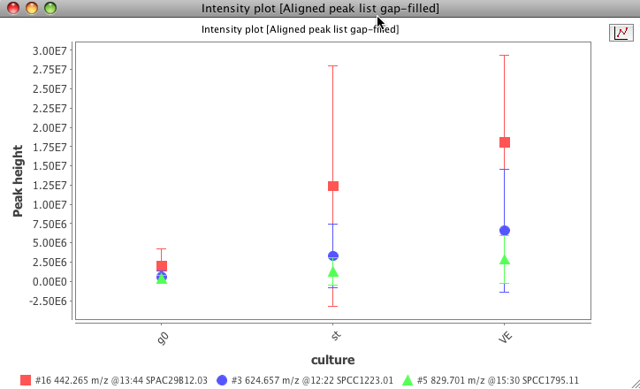

This plot is using the third part library JfreeChart for its basic functionality. To zoom in, drag the mouse from left to right, selecting the area to zoom. To zoom out drag the zoom from right to left.
A tool bar on the right side of the window has a button to switch off/on the display of lines to connect the points.

Optionally an error bar can be displayed indicating the standard deviation of the peak value in many samples. In order to display this bar, the raw data files need to be grouped. This functionality is done by setting sample parameters defined by the user.
